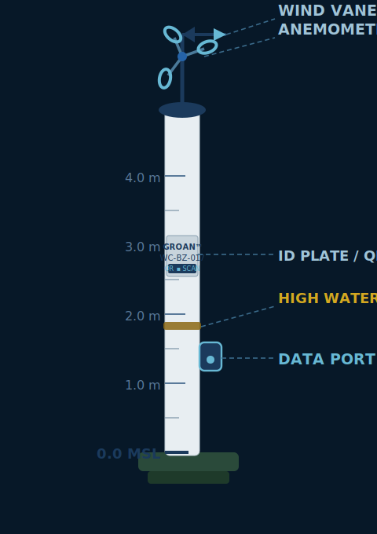
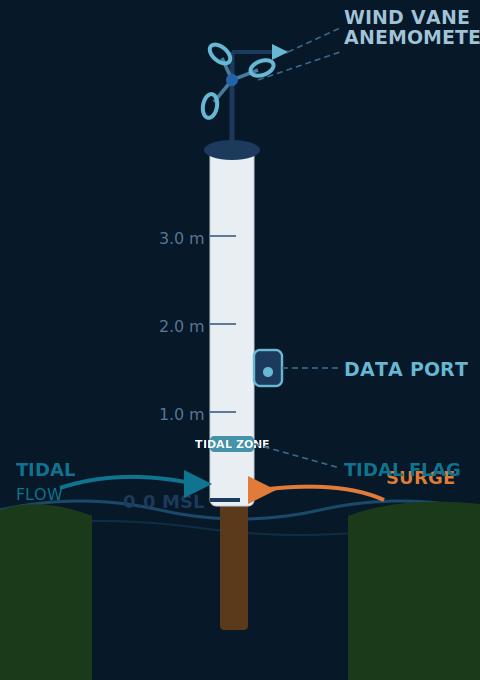
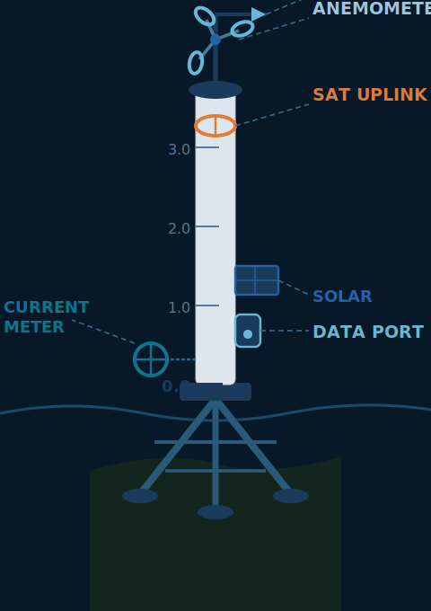
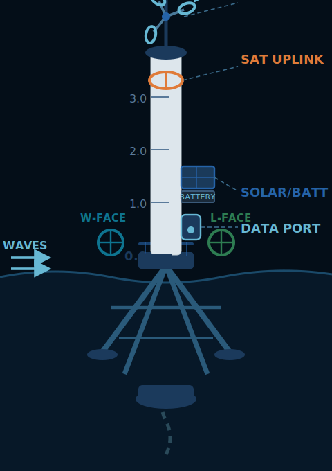
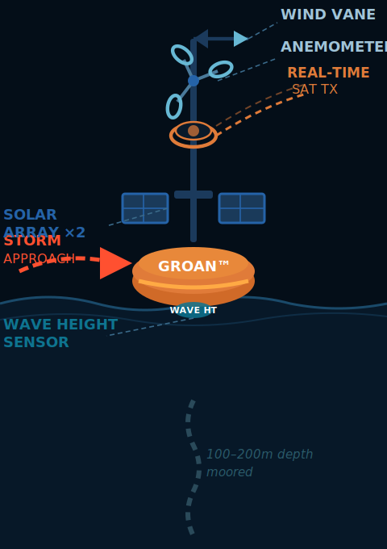
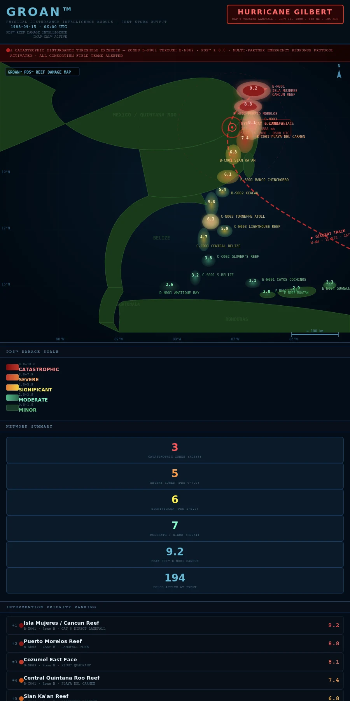

Mangrove • Blue hole & tidal creek • Seagrass • Coral reef • Marine life — five connected habitats, one field platform
The Bahamas • The Caribbean • U.S. Pacific & Atlantic Coasts
Planned multi-month field work in shallow water most research vessels can't reach — collecting reef, seagrass, mangrove, and water-quality data to support the research teams already working these waters.
Mangrove • Blue hole & tidal creek • Seagrass • Coral reef • Marine life — five connected habitats, one field platform


Shamrocket draws 24 inches. She works inside the reef line, up the mangrove creeks, over the seagrass flats, and onto the beaches of uninhabited cays. She carries no fuel and runs on wind and solar, so she can stay on station for months — not days — without returning to port.
That is the planned core of GROAN™ in the Bahamas: a sustained, low-impact field presence in the shallow places that are hardest and most expensive to survey, with repeat visits to the same sites season after season.
Bahamian reefs don't exist on their own. They depend on the seagrass, the mangroves, the tidal creeks, and the animals that move between them. The planned Bahamas work follows all five.
Planned: coral condition, bleaching and reef health at shallow sites, with repeat visits each season.
The nursery beds and feeding grounds that link the shoreline to the reef.
The creeks and shorelines that shelter juvenile fish and hold the coast together.
Turtles, rays, reef fish — and invasive lionfish, logged and removed.
Tidal creeks, blue holes, and brackish water where land and sea meet.
Each site is planned to have a position and a record. Dive and snorkel sites, anchorages, uninhabited cays, and hurricane holes would be logged with their coordinates, conditions, and water-quality readings, and revisited each season so change can be seen over time.
Hurricane-hole records, verified in person on the Bahamas and U.S. coasts, are planned for release to mariners once verification is complete.
GROAN™ is a proposed platform. Bahamas field work is in planning. Forecasting and intervention effectiveness have not yet been validated, and no forecast skill has been demonstrated.
The design basis for GROAN™'s storm surge measurement system is not a hypothetical storm. It is the worst storm this reef system has on record, and the one no network was in place to measure.
Hurricane Gilbert struck the Mesoamerican Reef in September 1988. Its eye made landfall on the northeastern Yucatan Peninsula on September 14 as a Category 5 hurricane, directly over the Cancun and Cozumel reef corridor. After crossing the peninsula it re-entered the Gulf of Mexico, restrengthened, and made a second landfall at La Pesca, Tamaulipas, as a Category 3 on September 16.
At 500 miles across, Gilbert did not hit one country. Its circulation reached from the Gulf coast of Mexico to the Bay Islands of Honduras, affecting every reef zone in the corridor at once. More than 300 people died across the affected countries, and damage was estimated at $2.98 billion (1988 USD).
No network measured what the storm did at the reef. Scientists working in the aftermath reconstructed the damage from biological surveys conducted weeks later. They could observe the damage, but they could not measure the force that caused it.
The GROAN™ storm surge network is specified to resolve a Gilbert-class event from the Veracruz reef system in the Gulf of Mexico to the Bay Islands of Honduras, a corridor of roughly 1,800 km. It is designed to a Category 5 wind and wave load envelope and uses five pole and buoy types:





Five pole and buoy types: 1 land-based coastal • 2 river mouth • 3 offshore reef-edge • 4 atoll perimeter • 5 deep approach buoy
The full network is 194 poles and buoys, spread across five zones from north to south. Zone exposure profiles are drawn from Gilbert's documented impact pattern.
| Zone | Coverage | Stations | Gilbert Exposure |
|---|---|---|---|
| A | Veracruz → Yucatan tip (Gulf) | 46 | Northern circulation, then Gulf re-intensification |
| B | Quintana Roo (Caribbean) | 44 | Direct eye crossing. Worst case. |
| C | Belize | 49 | Northern outer bands. Atoll systems fully exposed. |
| D | Guatemala | 15 | Southern outer bands. Amatique Bay surge amplification. |
| E | Honduras + Bay Islands | 40 | Southern circulation. Bay Island direct exposure. |
| Total | Veracruz → Honduras | 194 | Full Gilbert-class event coverage |
Offshore poles matter because the surge that reached the coast was generated at the reef first. A land-based network records what arrives at the beach. It does not record what happens to the reef. Type 5 buoys, 60–80 km out on the approach track, are designed to give roughly two to three hours of advance data at Gilbert's forward speed.
The map below shows how the storm could have been managed with the full 194-station network in place across the affected region. It is a scenario, not a record: GROAN's Physical Disturbance Intelligence Module is run on Gilbert's documented track, surge heights, and wind field, and produces a zone-by-zone picture of where the reef would have been hit hardest and where field teams would have been sent first. The Physical Disturbance Score™ (PDS™) values are modeled estimates, not sensor readings.

Simulated scenario: 194-station GROAN network, Hurricane Gilbert (September 1988). Modeled from documented track and impact geometry. Not measured data.
Collecting the data is the first step. GROAN then runs it through a sequential pipeline:
| Phase | Zones | Stations | Rationale |
|---|---|---|---|
| Phase 1 — Year 1 | Zone B (Quintana Roo) and Rim Run anchor sites | 44 | Direct eye-crossing zone. Densest reef. Highest immediate scientific return. |
| Phase 2 — Year 2 | Zone C (Belize, full coverage) | 49 | Second-highest reef density. Three major atolls. |
| Phase 3 — Years 2–3 | Zone E (Honduras + Bay Islands) | 40 | Documented storm impact zone. Bay Island reef complex. |
| Phase 4 — Year 3 | Zone A (Veracruz → Yucatan tip) | 46 | Gulf coast extension. Gilbert second-landfall zone. |
| Phase 5 — Years 3–4 | Zone D (Guatemala) | 15 | Completes the corridor. Gilbert outer-band zone. |
Full network operational in Year 4.
This case study describes a proposed measurement network. It is a design specification, not a deployed system. The post-storm map is a modeled simulation, not measured data. Forecasting and intervention effectiveness have not been validated, and no forecast skill has been demonstrated.
NOAA's own review of Gilbert, Hurricane Gilbert (1988) in Review and Perspective, documents what the National Hurricane Center could observe and forecast during the storm. The table sets that against what the GROAN storm surge network specifies. It shows where the two overlap and where they differ.
| Function | NOAA / NHC in 1988 | GROAN network (specified) |
|---|---|---|
| Aircraft reconnaissance | U.S. Air Force and NOAA flights gave the main intensity data. A NOAA aircraft measured the 888 mb central pressure. Dropsondes were used where available. | Not part of the network. The network uses no aircraft. |
| Satellite | GOES imagery, with Dvorak estimates, used mainly to fix position, intensity and size. | Not part of the network. |
| Ocean and surface measurement | Sparse. Ship reports and a few land stations. Few observations within several hundred miles for four to five days. | 194 stations recording water level, wind speed and direction. Reef-edge and atoll poles add current speed and direction. |
| Storm track forecast | Six track models. The preferred model was NHC83. The official 48-hour track error was about 109 nautical miles. | Not specified. The network does not include a track model. It depends on external storm forecasts. |
| Storm intensity | Aircraft pressure readings and Dvorak satellite estimates. | Not specified. The network does not estimate storm intensity. |
| Storm surge | Surge heights were measured after the storm. The review does not cite a surge model. | Surge measured in real time at 194 stations. The surge estimation method is not specified. |
| Reef impact | Not measured. Damage was reconstructed from biological surveys conducted weeks later. | Modeled Physical Disturbance Score™ per reef zone, calibrated against Gilbert. Based on measured water level, wind and current. |
| Advance warning | Track forecasts out to 48 hours, with the errors noted above. | Type 5 buoys give an estimated 2–3 hours of advance data. This is a design estimate, not a demonstrated forecast. |
| Validation | Forecast errors were measured against observed tracks. | Not validated. The network has not been tested in a live storm. |
The network produces five kinds of output: live physical measurements, quality-controlled records, zone-level Physical Disturbance Scores™ (PDS™), forward outputs per zone, and a permanent, corridor-wide event record. The sections below describe how each country in the coverage zone could use them. Everything here assumes the network is built and the forecasting is validated, which has not yet happened.
Direct eye-crossing zone with 44 stations. Pre-landfall data can guide beach, ferry and reef-tour decisions. The post-storm priority ranking can direct restoration to the reef sections that need it most.
The Sistema Arrecifal Veracruzano has no offshore monitoring today. Zone A would produce the first physical record of what a Gulf re-entry does to those reefs, and give the port surge data for its operations.
Type 3 offshore poles give oil and gas operators wind, wave and surge data at the platforms. In 1988 about 5,000 oil workers were evacuated, so this is a direct operational use.
River-mouth poles show how far surge travels upriver, informing flood planning for inland communities.
Turneffe, Lighthouse Reef and Glover’s are the most exposed points in Zone C. Type 4 perimeter poles measure what the atoll rims actually take, not what the coast receives. That evidence matters to the tourism and fishing economies that depend on the atolls.
The Smithsonian research station is an existing reference site. Its biological records could be linked to a continuous physical record from the network.
River-mouth poles track how surge moves inland, supporting flood warnings for Belize City and river communities.
The bay’s enclosed shape drives water inland, so surge inside it can exceed heights on the open coast. Four coastal stations inside the bay would let Puerto Barrios and Santo Tomás plan for those higher levels.
River-mouth data supports flood planning in the basins that Gilbert’s rain affected.
With 15 stations, Guatemala’s zone is the most dependent on interpolation from neighboring stations. Local decisions should account for that before relying on the data.
Each island gets coastal and offshore stations. The Type 5 buoy northeast of Guanaja is the earliest warning point for storms approaching from the southeast. A 2–3 hour lead time matters to island communities that depend on a single road or ferry.
Continuous physical records support closures, zoning and enforcement in the marine park and biosphere reserve.
Gilbert and Mitch both drove flooding through these river systems. River-mouth poles support flood planning there.
Population-level use would require inundation mapping, validated forecasting, and integration with each country’s emergency management system. None of those is in place.
The PDS™ values and the post-storm map are modeled, not sensor readings. The model is calibrated against a single event, Hurricane Gilbert, and may not generalize to other storms. Forecasting and intervention effectiveness have not been validated, and the 2–3 hour warning figure comes from forward-speed arithmetic, not a demonstrated forecast. Zone D has the thinnest coverage.
The network measures what the water does at the coast and reef. It does not yet say which buildings and streets that water would reach. A proposed next phase would combine GROAN's measurements with terrain, exposure and damage data to estimate shore impact. None of this is part of the current specification, and none of it has been validated.
| Stage | What it produces | Main data | Status |
|---|---|---|---|
| 1 — Exposure map | A static map of low-lying areas and assets, with a simple below-elevation risk layer. | Public elevation, building and road data. | Proposed. Mostly public data. |
| 2 — Station overlay | Measured water levels at the stations, compared against the elevation map to show which low areas the surge is reaching. | Network water level and elevation data. | Proposed. Depends on the network being built. |
| 3 — Coupled model | Flood depth and damage estimates by building and zone, with uncertainty ranges. | All of the above, plus validation data. | Proposed. Requires a government partner to use and fund validation. |
The outputs would go to national and local emergency authorities. They would support decisions about which areas to warn and where to send crews first. GROAN would not make evacuation decisions, and the outputs would carry uncertainty ranges so authorities can see how reliable each prediction is.
Elevation error can outweigh every other input, especially in low, flat areas. Local features such as seawalls, dunes and canals change flooding in ways coarse models miss. Shore predictions depend on the storm track, which GROAN does not forecast. A wrongly reassuring map is the most serious risk, so every output would carry uncertainty and disclaimers. No version of this has been validated.
In the Water


Marine Observation and Operations Platform: the boat, the instruments, and the person operating them, all working from the water.

Shamrocket · 24" Draft · No Fuel Aboard
Daniel Roe, aka 'Catamaran Dan', has spent roughly three decades as a technology project management consultant. Much of that work has been in clinical decision support systems for healthcare networks. He holds an MS in Health Informatics from the University of Tennessee Health Science Center and an MBA from George Washington University.
The GROAN™ Platform White Paper describes the proposed decision-support platform. Reading it requires agreeing to the terms of use shown on the access page.
Read the white paperGROAN™ is designed to support the research teams already working in the Bahamas, the Caribbean, and the U.S. Pacific and Atlantic coasts — not to compete with them. If your team could use a shallow-water platform, a trained operator, and a sustained presence at your sites, let's talk.
A full research prospectus is available to research organizations on request.
nevadoraiders@gmail.com